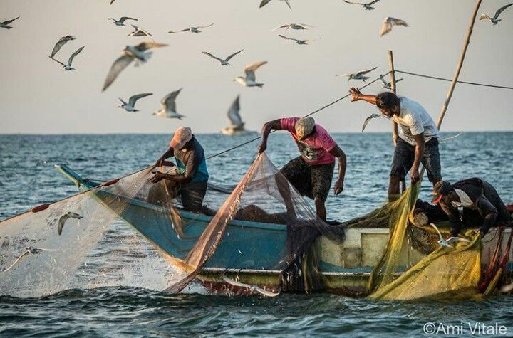
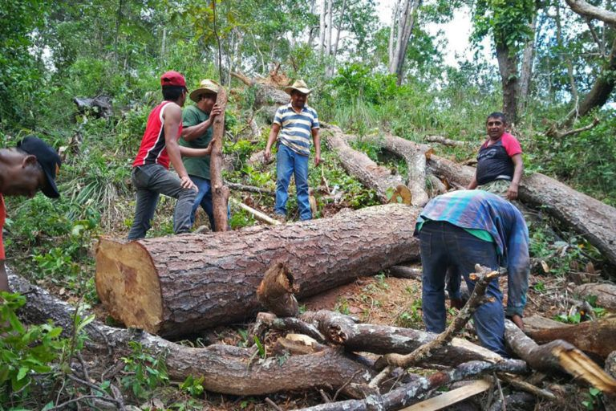
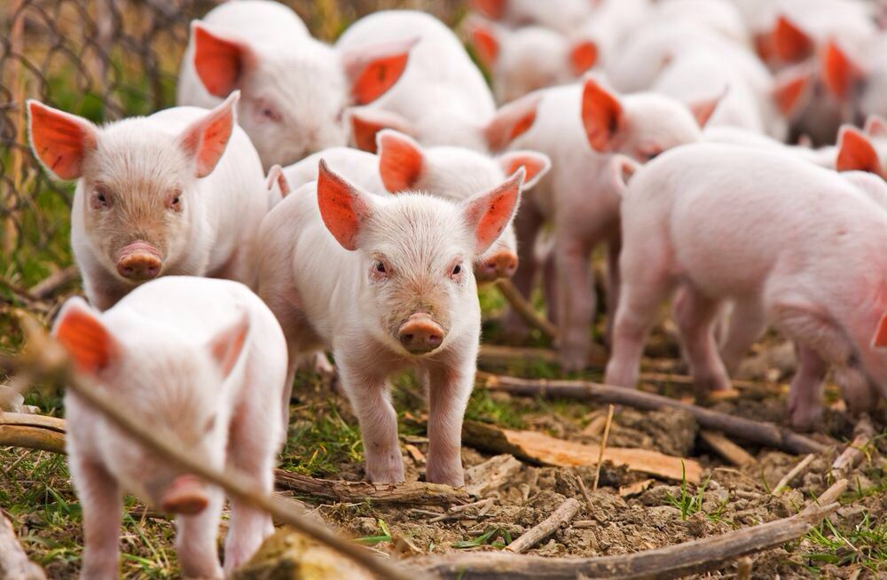

AGRIKULTURA
- Isang agham at sining na may kinalaman sa pagpaparami ng mga hayop at mga tanim o halaman.
- Ito ay may kaugnayan sa lahat ng gawain na sangkot ang mga hayop at halaman
- AGER=Lupa; CULTURA=Paglilinang
MGA GAWAIN SA SEKTOR NG AGRIKULTURA:
- Pagsasaka
- GAMPANIN NG PAGSASAKA:
- Pangunahing pananim: palay, mais, niyog, tubo, saging, pinya, kape, mangga, tabako, at abaka na karaniwang kinokonsumo sa loob at labas ng bansa.
- Tinatayang umabot ng ₱797.731 bilyon ang kabuuang kita mula sa pagsasaka.
- Pangingisda
- GAMPANIN NG PANGINGISDA:
- Nauuri sa tatlo: komersiyal(malalaking isda), munisipal(pampang), at aquaculture(scientific fishing)
- Bahagi din nito ay ang panghuhuli ng hipon, sugpo, at pag aalaga ng mga damong dagat na ginagamit sa paggawa ng gulaman.
- Panghahayupan
- LIVESTOCK-Hayop na may 4 na paa
- POULTRY-Mga ibon (kasama rin ang rabbit!)
- GAMPANIN NG PANGHAHAYUPAN:
- May kinalaman sa mga hayop na itinaas para sa karne, hibla, gatas, itlog, atbp.
- Kasama rito ang pang-araw-araw na pangangalaga, pumipili ng pag-aanak at pagpapalaki ng mga hayop.
- Paggugubat/Pagtrotroso
- GAMPANIN NG PAGGUGUBAT:
- Patuloy na nililinang ang ating mga kagubatan bagamat tayo ay nahaharap sa suliranin ng pagkaubos ng mga yaman nito
- Pinagkukunan ng: plywood, tabla, troso, at veneer
- Pinagkakakitaan din ang rattan, nipa, anahaw, kawayan, pulot-pukyutan, at dagta ng almaciga.
KAHALAGAHAN NG AGRIKULTURA:
- Pinagmumulan ng pagkain
- Pinagkukunan ng hilaw na materyales upang makabuo ng panibagong produkto
- Nagkakaloob ng trabaho sa maraming Pilipino
- Nagpapasok ng dolyar sa ating bansa
- Pinagkukunan ng sobrang manggagawa patungo sa ibang sektor ng ekonomiya
KAHALAGAHAN NG AGRIKULTURA SA ISANG EKONOMIYA:
- Mahalaga ang sektor ng agrikultura sa isang ekonomiya dahil malawak ang kontribusyon. Ito ang itinuturing na kaban o pinagkukunan ng pagkain ng isang ekonomiya sapagkat tinutugunan nito ang ating pangangailangan sa araw-araw.
- Mayaman ang ating kagubatan sa iba't ibang klaseng punungkahoy na ginagamit bilang materyal sa paggawa ng bahay, muwebles at iba pang bagay sa konstruksyon. Ginagawang muwebles ang ratan at ginagamit naman sa paggawa ng pintura ang dagta ng ilang kahoy. Ang kamoteng kahoy ay ginagawang pandikit. Ginagamit na hilaw na materyal sa mga pagkaing de-lata ang mga isda at karne mula sa baboy at baka. Maraming pang produkto ang agrikultura na ginagamit bilang hilaw na sangkap sa produksyon ng mga pinabrikang produktong may mataas na halaga,.
- Maraming mamamayan ang nabibigyan ng trabaho ng sektor ng agrikultura kaya naman hindi nawawalan ng pagkakakitaan ang mga taga-rural kahit pa nagpapakita ng pagbaba ang proposyon ng mga manggaqawa. Dito inaasa ng maramina Pilipino and kanilang ikabubuhay. Pinagkukunan din ito ng nga pondo sa pagtustos ng malakihang pangangapital ng isang lipunan. Pinagkukunan din ito ng kitang panlabas. Nagluluwas ang Pilipinas ng kopra, hipon, prutas, abaka, tabla at mga hilaw na sangkap upang maragdagan ang ating panlabas na kita. Nagsisilbi rin itong pamilihan ng mga produkto sa industriya,sa pagtaas ng kita ng mga magsasaka, nakabibili sila ng mga produktong ginagawa ng mga industriya tulad ng makinarya sa pagsasaka, abono, damit at dahil may tuwirang pamilihan ng mga industriya, tataas ang kita ng magiging matatag ang sektor ng industriya.
SULIRANIN NG AGRIKULTURA:
- PAGSASAKA:
- pagliit ng lupang sakahan
- paggamit ng makabagong teknolohiya
- kakulangan ng mga pasilidad at imprastraktura sa kabukiran
- kakulangan ng suporta mula sa iba pang sektor
- pagbibigay prayoridad sa sektor ng industriya, pagdagsa ng dayuhang kalakal
- Climate Change
- PANGINGISDA:
- mapanirang operasyon ng malalaking komersiyal na mangingisda
- epekto ng polusyon sa pangisdaan
- lumalaking populasyon ng bansa
- kahirapan sa hanay ng mga mangingisda
- PAGHAHAYUPAN:
- pagkakaroon ng mga peste sa alagang hayop tulad ng baboy at manok
- PAGGUGUBAT:
- mabilis na pagkaubos ng mga likas na yaman
MGA PATAKARAN AT PROGRAMA HINGGIL SA PAGPAPAUNLAD SA SEKTOR NG AGRIKULTURA:
- PANAHON NA HINDI PA NASASAKOP ANG PILIPINAS
- Ang mga sinaunang Pilipino ay nakakapag-may-ari ng lupa sa pamamagitan ng pagiging unang nagtayo ng bahay.
- Wala pang titulo/rights noon.
- Ang pinagbabasehan lamang ay salita ng bawat isa.
- PANAHON NG KASTILA
- Encomienda System: lupang gantimpala sa matapat na naglilingkod sa hari ng Espanya at mga taong tumulong sa pananakop sa Pilipinas.
- PANAHON NG AMERIKANO
- Binili ng Amerika ang 160,000 hectares ng lupa mula sa mga prayle para sa mga magsasaka.
- Land Registration Act ng 1902:
- Nagkaroon ng mga titulo dahil dito.
- Ito ay sistemang Torrens, kung saan ang mga titulo ng lupa ay ipinatalang lahat.
- Public Land Act ng 1902: Pamamahagi ng mga lupaing pampubliko sa mga pamilya na nagbubungkal ng lupa
- PANAHON NG KASARINLAN
- Batas Republika Blg. 1160 ng 1954: Nagtatag sa National Resettlement and Rehabilitation Administration (NARRA)
- Batas Republika Blg. 1190 ng 1954:
- Bilang proteksyon laban sa mapang-abuso na may-ari ng lupa sa mga manggagawa.
- Ito ay laban sa mga Absentee Landlord
- Agricultural Land Reform Code of 1963:
- Nagpalaya sa mabigat na trabaho ng magsasaka mula sa kanilang pagkaalipin sa utang at kahirapan.
- Nilagdaan ni Diosdado Macapagal noong Agosto 8, 1963
- Atas ng Pangulo Blg. 2 ng 1972: Isailalim sa reporma sa lupa ang buong Pilipinas noong panahon ni Pangulong Marcos
- Atas ng Pangulo Blg. 27: Bibilhin ng pamahalaan ang mga lupang sakahan na taniman ng palay/mais na lampas sa 7 ektaryang limitasyon at ipamamahagi ito sa mga magsasakang walang lupa.
- Batas Republika Blg. 6657 ng 1988:
- “Comprehensive Agrarian Reform Law (CARL)” na inaprubahan ni Corazon Aquino noong Hunyo 10, 1988
- Kabilang dito ang lahat ng publiko at pribadong lupang agrikultural at nakapaloob sa Comprehensive Agrarian Reform Program (CARP)
- Ipinamamahagi ang lahat ng lupang agrikultural anuman ang tanim nito sa mga walang lupang magsasaka.
- Matatapos sana sa 10 taon ngunit ginagawa pa rin ang batas hanggang ngayon.
BATAS REPUBLIKA BLG. 6657 NG 1988
HINDI SAKOP NG CARP ANG:
- Liwasan at parke
- Mga gubat at reforestation area
- Mga palaisdaan
- Tanggulang pambansa
- Paaralan
- Simbahan
- Sementeryo
- Templyo
- Watershed, atbp.
MGA NAISAKATUPARAN UPANG MAIANGAT ANG KALAGAYANG PANGKABUHAYAN NG MGA MAGSASAKA (CARP, 2003)
- Pagtatayo ng bahay-ugnayan (bagsakan) para sa mga magsasaka upang masigurong mayroon suportang maibigay sa kanila.
- Pagtatayo ng gulayan para sa mga magsasaka.
- Pagsisiguro na ang mga anak ng mga magsasaka ay makapag-aral kaya itinayo ang Pangulong Diosdado Macapagal Agrarian Reform Scholarship Program
- Kalahi agrarian reform zones
PANGINGISDA
- Pagtatayo ng mga daungan
- Philippine Fisheries Code of 1998: Paglilimita ng pamahalaan at naglalayon ng wastong paggamit sa yamang pangisdaan.
- Fishery Research: Isang programa ng pamahalaan na isinasagawa upang masiguro ang pagpaparami at pagpapayaman sa mga yamang-tubig
PAGTOTROSO
- Community Livelihood Assistance Program (CLASP): Paglilipat ng teknolohiya/pagtuturo sa mga mamamayan ng wastong paglinang sa mga likas na yaman.
- National Integrated Protected Areas System (NIPAS): Maingatan at protektahan ang kagubatan
- Sustainable Forest Management Strategy: Upang matakdaan ang permanente at sukat ng kagubatan
LANDBANK OF THE PHILIPPINES
Upang magkaroon ng kaagapay ang mga magsasaka sa pagpapaunlad ng kanilang kabuhayan.
SANGAY NG PAMAHALAAN NA TUMUTULONG SA SEKTOR NG AGRIKULTURA
- Department of Agriculture (DA): Gumagabay sa mga magsasaka ukol sa makabagong teknolohiya at wastong paraan ng pagtatanim.
- Bureau of Fisheries and Aquatic Resources (BFAR): Sinisikap na paunlarin ang larangan ng pangingisda.
- Bureau of Animal Industry (BAI): Nangangasiwa sa larangan ng paghahayupan.
- Ecosystem Research and Development Bureau (ERDB): Nagsasagawa ng pananaliksik sa ecosystem upang magbigay ng siyentipikong batayan sa pangangalaga ng kapaligiran at yamang gubat.



